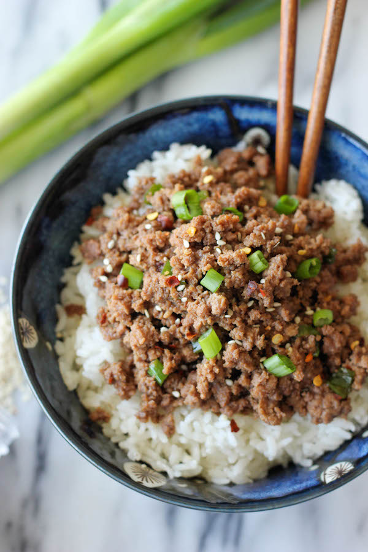

Korean Beef Bowl

Description
Chicken and rice is for bodybuilders who
hate themselves. Behold the dish to welcome
back your enjoyment of food while nurturing
the gains you've already achieved.
Ingredients
- 1 pound lean ground beef
- 5 cloves garlic, crush
- 1 tablespoon freshly grated ginger
- 2 teaspoons toasted sesame oil
- 1/2 cup reduced-sodium
- 1/3 cup light brown sugar
- 1/4 teaspoon crushed red pepper
- 6 green onions, chopped divided
- 4 cups hot cooked brown rice
- 1 tablespoon toasted sesame seeds
Steps
- Heat a large skillet over
medium-high heat. Add beef and cook, stirring and crumbling
into small pieces until browned, 5 to 7 minutes. Drain excess grease.
- Add garlic, ginger, and sesamie oil, stirring until fragrant, about 2 minutes.
Stir in soy sauce, brown sugar, and red pepper.
Cook until some of the sauce absorbs into the beef, about 7 minutes.
Add 1/2 of the chopped green onions.
- Serve beef over hot cooked rice; garnished with sesame seeds
and remaining green onions.